국보 · 보물 검색
국립중앙박물관이 소장한 국보와 보물을 다양한 조건으로 검색해보세요.
유물의 명칭과 시대, 재질 등 원하는 정보를 통해 관심 있는 문화유산을 쉽고 편리하게 찾아볼 수 있습니다.
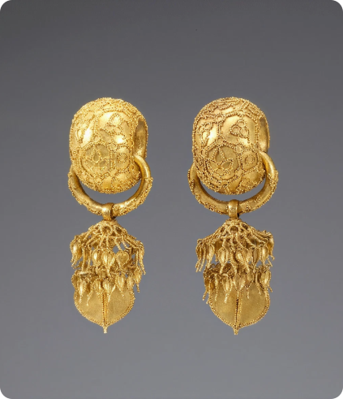
경주 부부총 금귀걸이
국적/시대
한국 - 신라

녹유 뼈단지
국적/시대
한국 - 통일신라
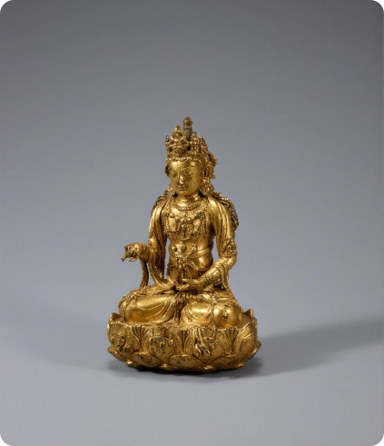
금동관음보살좌상
국적/시대
한국 - 고려
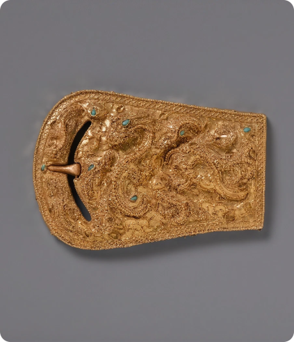
평양 석암리 금제 띠고리
국적/시대
한국 - 낙랑
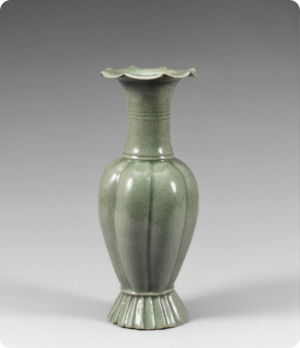
청자 참외 모양 병
국적/시대
한국 - 고려
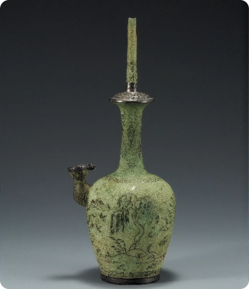
청동 은입사 물가풍경 무늬 정병
국적/시대
한국 - 고려
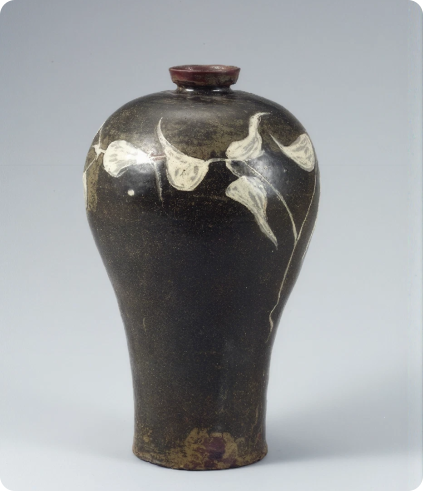
청자 철채 퇴화 앞무늬
국적/시대
한국 - 고려
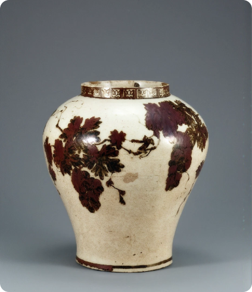
백자 철화 포도 원숭이 무늬 항아리
국적/시대
한국 - 조선
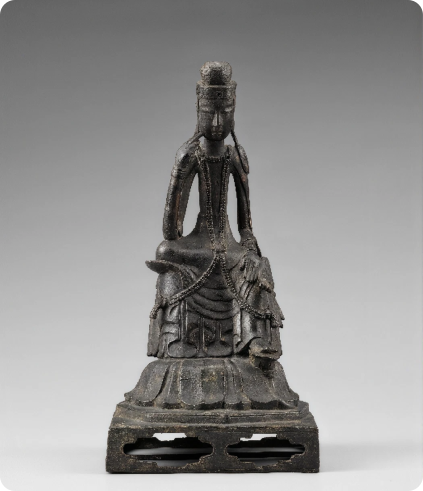
금동 반가사유상
국적/시대
한국 - 삼국
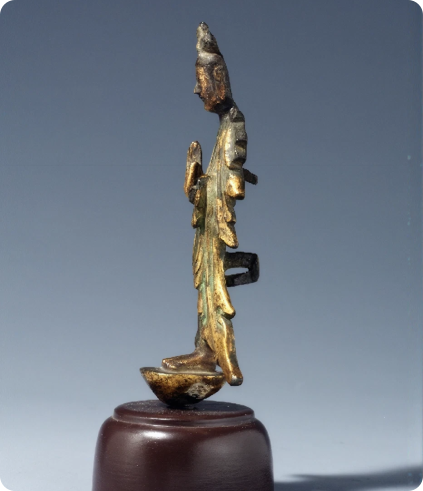
금동보살입상
국적/시대
한국 - 고구려
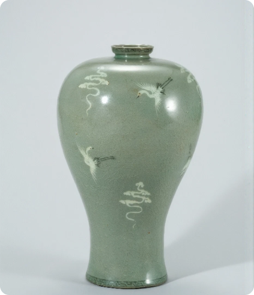
청자 상감 구름 학무늬 매병
국적/시대
한국 - 고려
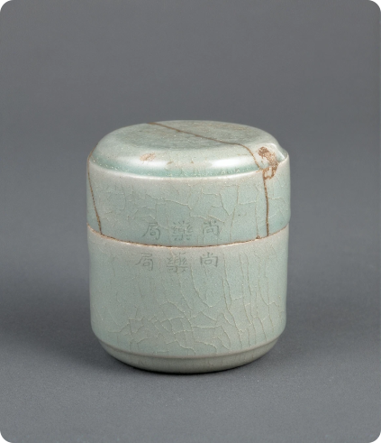
청자 음각 「상약국」명운룡문 합
국적/시대
한국 - 고려